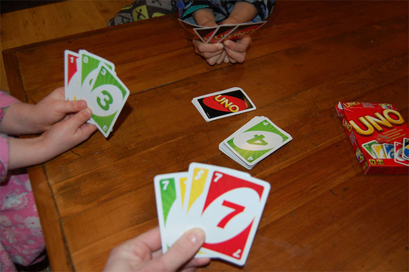

Uno
Uno je američka kartaška igra koja se igra na specijalno odštampanom špilu karata (Mau Mau je blizu identična igra koja se igra sa običnim kartama). Igra je originalno razvijena tokom 1971. godine, a od 1992. godine proizvodi Matel.
Špil ima 108 karata. Svakih 25-oro karata je od jedne boje (crvene, zelene, žute, plave), a svaka boja ima po 2 ista ranga osim nule. Svaki rang je od nule do devetke, "Skip" (karta koja, posle onog igrača koji je bacio, sledeći preskače) "Draw Two" (sledeći igrač kupuje dve karte i ne igra) i "Reverse" (kad igrač baci kartu, menja se smer). Osim toga, špil ima po četiri "Wild" karte (kad igrač baci, menja se boja karti) i "Wild Draw Four" karte (kad igrač baci bira boji, a i sledeći kupuje četiri karte).
Kad počinje partija, sedam karata je dato svim igračima. Igrač sa leve strane dilera igra prvi, osim ako je "Draw Two", "Reverse", "Skip", "Wild Draw Four" ili "Wild" karta. Ako mu dođe red, igrač mora da uradi jedno od sledećih:
- baci kartu, ako isti simbol ili boja
- baci "Wild Draw Four" ili "Wild" kartu
- kupi jednu kartu
Ako igrač odluči da kupi kartu, i ako karta se slaže, može (ali i ne mora) da igra kartu.
- Igrač može da kupi kartu iako ima jednu ili više karata koju on može da igra.
- Ako igrač kupi kartu, i ako može da se igra, može da je čuva ili da je baci.
- Ako igrač odluči da kupi, njemu nije moguće da igra (osim kada kupljena karta može da se igra).
- "Wild" karte mogu da se igraju bilo kad. (iako igrač ima ostale karte koje mogu da se igraju).
- Igrač može igrati "Wild Draw Four" kartu samo ako igrač nema kartona koji se slažu sa trenutnom bojom.
- Ako se koristi ceo špil tokom igre, špil se opet meša. Igra se nastavlja dalje normalno
- Nezakonito je trgovati karte bilo koje vrste sa drugim igračima, uključujući i specijalne karte kao što su "Wild", prazne a i preokretne kartice.

Ako igraču ostane samo jedna karta, mora vikati "uno", i ako to ne uradi, mora kupiti dve karte. Prvi igrač koji se otarasi njegove/njene poslednje karte (izlazi) osvaja ruku i postiže pogodak za bodove karte održan od strane drugih igrača. Brojčane karte računaju njihove nominalne vrednosti, sve akcione kartice se računaju dvadeset, i "Wild" pedeset. Ukoliko "Draw Two" ili "Wild Draw Four" budu izbačene kao poslednja karta, sledeći igrač u nizu moraju izvući odgovarajući broj karata pre nego što je rezultat evidentiran.
Cilj igre je osvojiti 500 poena.